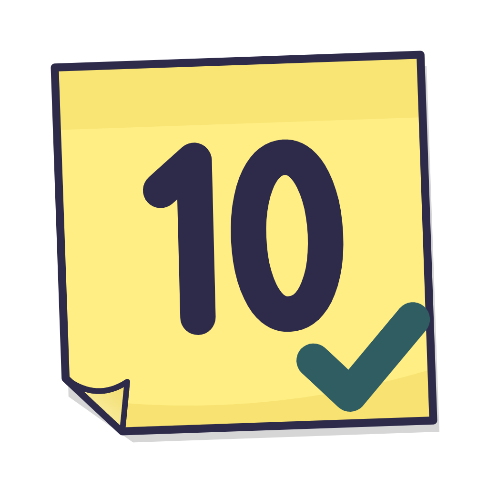
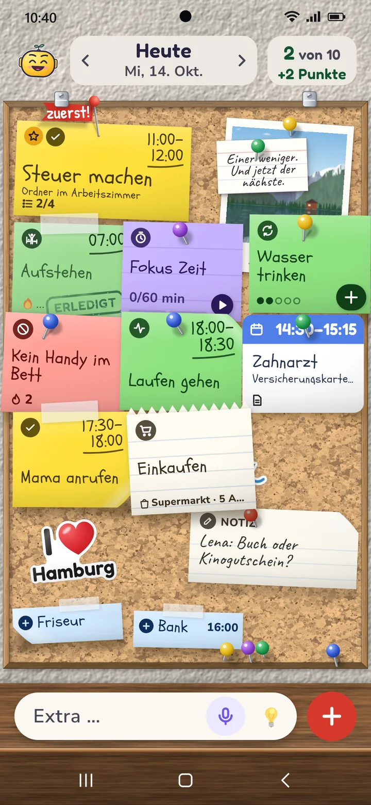
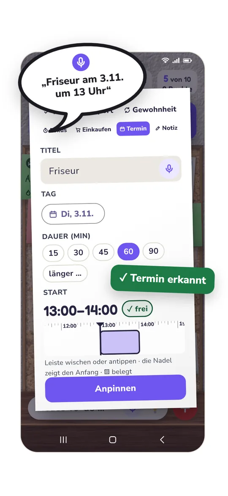
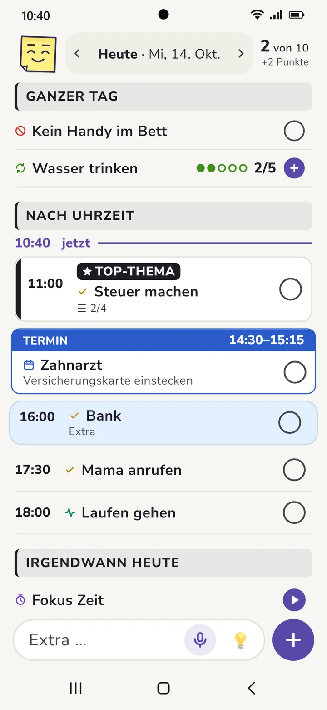
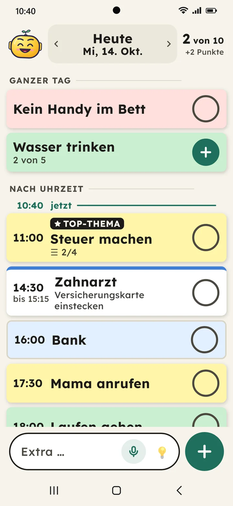
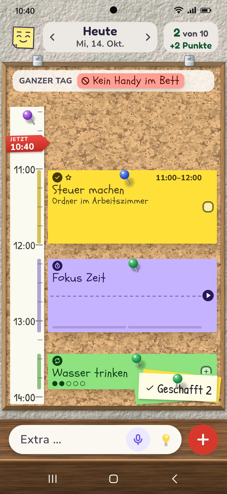
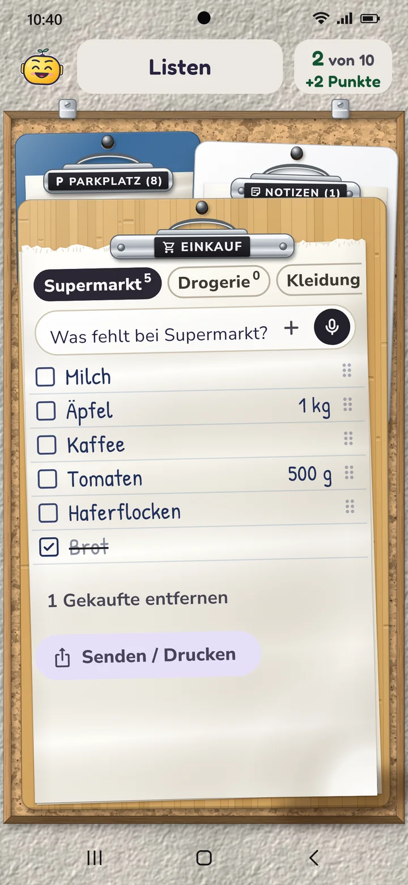
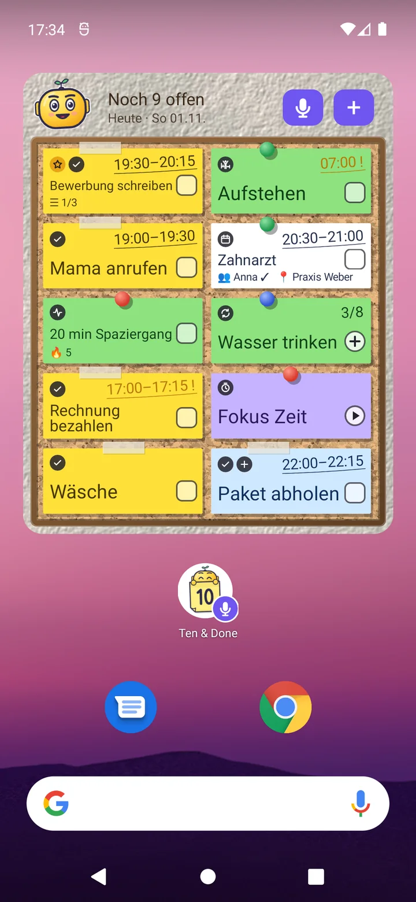
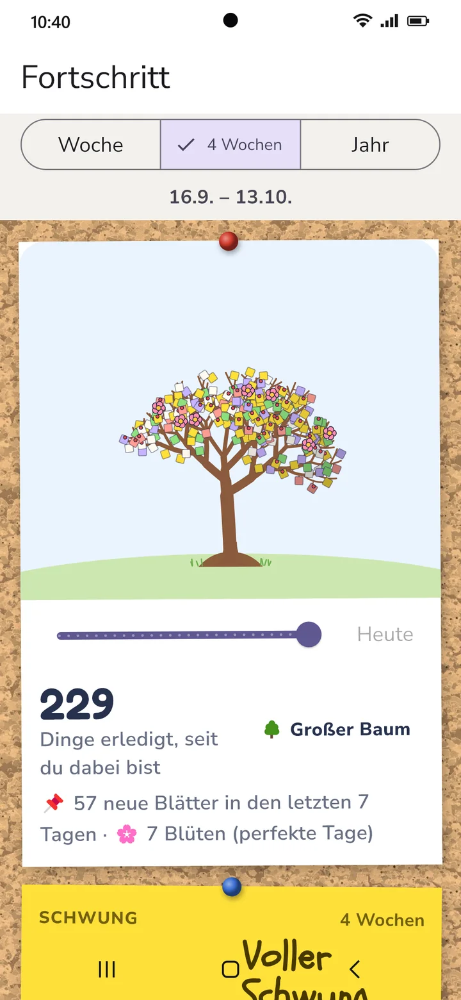
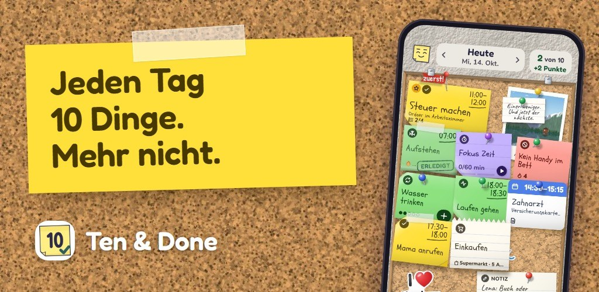

Presse
Text, Fakten und Bilder zu Ten & Done. Alles darf für Berichte über die App frei verwendet werden.
Kurz gesagt
Ten & Done: Ein Brett statt Zettelchaos – jeden Tag genau zehn Aufgaben
Termine im Kalender, Aufgaben im Kopf, Post-its am Kühlschrank und dazu eine To-do-Liste, die nie kürzer wird: Die App Ten & Done bringt all das auf ein Brett. Darauf passen genau zehn Zettel, große und kleine Aufgaben zählen gleich. Termine aus dem Kalender kommen von selbst dazu, neue Gedanken lassen sich einfach einsprechen. Was heute nicht aufs Brett passt, wartet auf dem „Parkplatz“. Morgens sagt man seinen Plan fest zu, tagsüber wird abgehakt, und sind die zehn geschafft, ist Feierabend. Gewohnheiten, Einkaufsliste, Notizen und ein Widget für den Startbildschirm sind dabei. Die App braucht kein Konto, zeigt keine Werbung und speichert alles nur auf dem eigenen Handy. Entwickelt hat sie Andreas Zimmermann aus Düsseldorf. Ten & Done erscheint voraussichtlich im Dezember 2026 kostenlos für Android und iPhone; Premium mit weiteren Ansichten kostet 12,99 € im Jahr oder einmalig 29,99 €.
Fakten auf einen Blick
| Name | Ten & Done (Marke angemeldet) |
|---|---|
| Was | To-do-Liste und Tagesplaner mit genau zehn Aufgaben am Tag |
| Für | Android (ab Android 8) und iPhone (ab iOS 15), Handy und Tablet |
| Sprachen | Deutsch, Englisch |
| Erscheint | voraussichtlich im Dezember 2026, bei Google Play und im App Store |
| Preis | kostenlos; Premium 12,99 € im Jahr oder einmalig 29,99 € (Preise in Deutschland) |
| Daten | kein Konto, keine Werbung, keine Tracker; alles bleibt auf dem Gerät, eine Sicherung nur, wenn man sie selbst einschaltet |
| Entwickler | Andreas Zimmermann, Düsseldorf |
| Webseite | tenanddone.app |
| Kontakt | hallo@tenanddone.app |
Wer dahintersteht
Entwickelt hat Ten & Done Andreas Zimmermann aus Düsseldorf.
„Bei mir klebten Post-its am Bildschirm und am Kühlschrank. Termine standen im Outlook-Kalender, Aufgaben hatte ich im Kopf, Geburtstage nirgends eingetragen, dazu Einkaufszettel und Notizen auf dem Block. Ich habe lange nach einer App gesucht, die dieses Durcheinander in den Griff bekommt – und keine gefunden, die mir gefallen hat. Also habe ich sie selbst gebaut – beim Programmieren hat mir eine KI geholfen.“
Bilder
Frei zum Abdruck mit dem Hinweis „Bild: Ten & Done“. Alle Bilder zeigen ausgedachte Beispiele.
⬇ Alle Bilder laden (ZIP, 4,0 MB)





















Antippen lädt das Bild in voller Größe (JPEG, lange Seite 2000 px). Englische Fassungen liegen im ZIP und auf der englischen Seite.
Kontakt
Für Fragen, ein Gespräch oder einen Code für Premium zum Testen: hallo@tenanddone.app